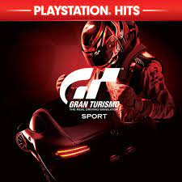
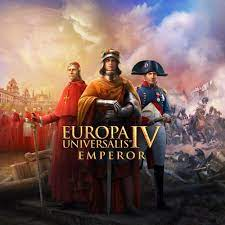
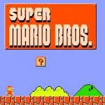

TOP Gier
|  |
Gran Turismo SportSymulacyjna gra wyścigowa, której deweloperem jest Polyphony Digital, na czele którego stoi Kazunori Yamauchi, a wydawcą Sony Interactive Entertainment. Tytuł przeznaczony wyłącznie na konsolę PlayStation 4. Gra po raz pierwszy została zapowiedziana w 2015 roku podczas Paris Games Week. Jest siódmą odsłoną głównej serii oraz pierwszą grą Gran Turismo wydaną na konsolę PlayStation 4. źródło: wikipedia.org |
|---|
|  |
Europa Universalis 4Gracz kieruje jednym z kilku państw europejskich. Jego zadaniem jest doprowadzenie własnego kraju do potęgi gospodarczej i militarnej, co osiągalne jest poprzez prowadzenie wojen, dyplomację, kolonizację oraz handel. Inspiracją dla twórców była gra planszowa o tym samym tytule. źródło: wikipedia.org |
|---|
|  |
Super Mario BrosKomputerowa gra platformowa wyprodukowana w 1985 roku przez Nintendo. Powstała ona w celu zdyskontowania popularności gry Mario Bros. z 1983 roku; początkowo wydano ją na konsoli Nintendo Entertainment System (ówcześnie konsola była znana pod nazwą „Famicom”, pod jaką ukazała się w Japonii). W Super Mario Bros. gracz przejmuje kontrolę nad hydraulikiem Mario, którego zadaniem jest ocalenie księżniczki Toadstool porwanej przez Bowsera. W przypadku gry wieloosobowej w poszukiwaniach Mario towarzyszy Luigi, sterowany przez drugiego gracza. źródło: wikipedia.org |
|---|
 |
Formuła 1oficjalna gra wideo Mistrzostw Formuły 1 i Formuły 2 2020 opracowana i opublikowana przez Codemasters. Jest to trzynasty tytuł w Formule 1 seria stworzona przez studia i został wydany w dniu 7 lipca do wstępnego rozkaz Michael Schumacher Edition i 10 lipca na Seventy Edition w systemie Microsoft Windows, PlayStation 4, Xbox One, a na pierwszym czas, Stadia. Gra jest dwunastą główną odsłoną serii i zawiera dwadzieścia dwa tory, dwudziestu kierowców i dziesięć drużyn zaproponowanych w tymczasowych Mistrzostwach Świata Formuły 1 w 2020 roku. źródło: wikipedia.org |
|---|